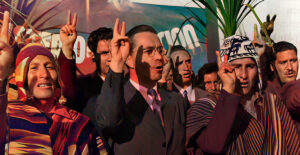
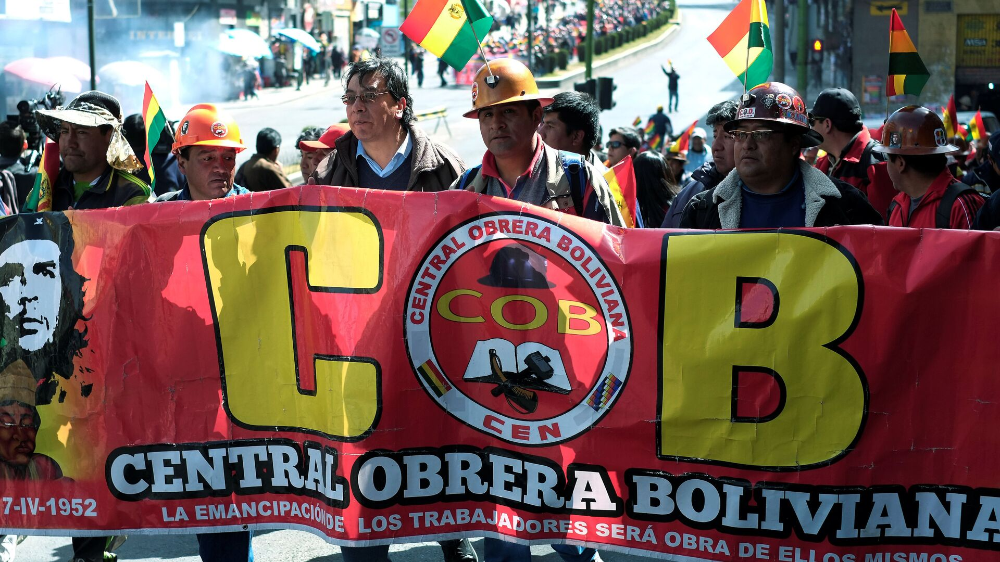

Revolución Nacional de 1952
La Revolución boliviana de 1952, llamada también Revolución Nacional, fue el periodo de la historia de Bolivia en el que gobernó el Movimiento Nacionalista Revolucionario. Esta etapa se inició el 9 de abril, cuando una insurrección popular acabó con la Junta Militar que se había hecho cargo del país. Las razones que llevaron al MNR al poder fueron, fundamentalmente, dos. El primero fueron los efectos que tuvo la Gran Depresión en la economía boliviana, mientras que el segundo fue la Guerra del Chaco, que hizo que los ciudadanos empezaran a cuestionar el sistema político del momento. Las elecciones de 1951 fueron ganadas por el MNR, aunque sin mayoría absoluta. Sin embargo, la clase dirigente no aceptó ese resultado y entregó el poder a los militares. El 9 de abril de 1852 un levantamiento armado en el que participaron diversos sectores populares llevó a la presidencia a Víctor Paz Estenssoro. Entre las medidas tomadas por el nuevo gobierno destacaron la implantación del sufragio universal, la nacionalización de las minas y una reforma agraria que trataba de dar solución a los problemas de los campesinos. En 1964, un golpe de Estado derrocó al gobierno del MNR, poniendo punto y final a la revolución.
Causas de la Revolución
La revolución de 1952 fue causada por varias razones, aunque la mala situación económica fue una de las que más pesó. A pesar de que el país había avanzado bastante, su estructura productiva, esencialmente agrícola, no era suficiente para que la población tuviera un nivel de vida aceptable. La Crisis del 29, que comenzó en los Estados Unidos, se transformó pronto en lo que se ha conocido como Gran Depresión. Sus efectos llegaron a todas las partes del planeta, provocando la caída de las economías en muchos países. En el caso de Bolivia, la crisis provocó un gran descenso de los precios de su mineral más valioso, el estaño. La merma de esta fuente de ingresos hizo que el país debiera declarar la suspensión de pagos de la deuda externa. En 1932 comenzó un conflicto bélico entre Bolivia y Paraguay que duró casi tres años. El motivo fue la disputa por un territorio llamado Chaco Boreal. Este enfrentamiento supuso que los dos países, que ya de por si eran de los más pobres de la región, gastaran una enorme cantidad de recursos. Al final de la guerra, el tratado de paz concedió tres cuartas partes del territorio en disputa a Paraguay. Este resultado, unido con el mencionado gasto de recursos, provocó que parte de la población comenzará a poner en cuestión el modelo político. La oligarquía dominante empezó a ser criticada por el resto de las clases sociales. Ante esto, los oligarcas optaron por imponer su poder mediante la represión. Durante unos años se sucedieron varios gobiernos encabezados por militares. Por otra parte, la clase trabajadora empezó a organizarse de una manera más efectiva. Esto se vería de manera clara durante los días que significaron el triunfo de la revolución de 1952.
Desarrollo de la Revolución
El Movimiento Nacionalista Revolucionario, había sido fundando justo tras el fin de la Guerra del Chaco, cuando el país se encontraba en una crisis de confianza. Las clases dominantes, oligarcas, barones del estaño y grandes hacendados empezaron a ser criticados. Este partido político apareció con la intención de defender los intereses de los trabajadores y las clases medias. Tenía también un fuerte contenido nacionalista y no descartaba la revolución como método para llegar al gobierno. Las elecciones de 1951 se celebraron con la victoria del MNR, cuyo líder, Víctor Paz Estenssoro, se encontraba en el exilio. A pesar de que ganó con una diferencia notable en los votos, el partido no logró obtener la mayoría absoluta. Antes de que se eligiera al Presidente, que debía salir de algunos de los tres partidos más votados, el entonces mandatario decidió entregar el poder a los militares. Después de un año bajo el gobierno de una Junta Militar, el 9 de abril estalló la revolución. Todo comenzó cuando Antonio Seleme, general de policía, realizó un levantamiento armado. Seleme contó con la ayuda de Siles Suazo y Juan Lechín, ambos dirigentes del MRN. Igualmente, los carabineros participaron en la insurrección. Pronto se comprobó que este levantamiento contaba con mucho apoyo popular, especialmente entre los mineros y los obreros. El día 11, Lechín encabezó la toma del Cuartel de Miraflores y del Palacio Quemado. Con esto, el MNR alcanzó el poder el Bolivia. La revolución había terminado con 490 fallecidos, pero el ejército había sido derrotado. La Presidencia fue ocupada por Paz Estenssoro, que regresó al país para ocupar el cargo.
Consecuencias y Reformas
El primer gobierno del MNR estuvo presidido por Paz Estenssoro. Durante esta etapa, la Central Obrera Boliviana tuvo una incidencia muy importante en las decisiones tomadas. Fue durante esta legislatura cuando se aprobaron las medidas más importantes, desde la reforma agraria a la nacionalización de las mina. Entre las medidas tomadas por el nuevo gobierno destacaron: Sufragio Universal: Una de las primeras medidas aprobadas por el gobierno del MNR fue la implantación del sufragio universal. Hasta julio de 1952, cuando se aprobó la medida, no podían votar ni analfabetos, ni indígenas ni mujeres. El número de electores aumentó en más de 800.000 personas. Nacionalización de las Minas: Antes de la revolución, las minas bolivianas estaban en manos de tres grandes empresas: Aramayo, Patiño y Hoschild. El último día de octubre de 1952, el gobierno oficializó la decisión. Desde ese momento, 163 minas pasaron a estar en manos del Estado, que creó la Corporación Minera de Bolivia para gestionarlas. Reforma Agraria: La estructura de propiedad de la tierra en la Bolivia previa a la revolución estaba dominada por los grandes terratenientes. El 70% de los terrenos de cultivo estaban en manos de solo un 4,5% de la población. La ley se promulgó en agosto de 1952. Esta reforma agraria expropió gran parte de las tierras a los latifundistas, que fueron compensados económicamente. Los indígenas recibieron los terrenos, aunque se les impidió venderlas posteriormente.

Reforma Educativa: Más del 65% de los bolivianos, según datos de 1952, eran analfabetos. El gobierno del MNR creó la Comisión Nacional de la Reforma Educativa para solventar esta gran carencia social. La legislación resultante pretendía extender la educación por todo el país. A pesar de haber nacionalizado las minas, los estadounidenses consideraron al MNR como un movimiento nacionalista y no comunista. A lo largo de los años, ese apoyo se concretó en ayudas económicas y en el envío de comida cuando Bolivia tuvo problemas de escasez. Entre las organizaciones que contaron con más influencia durante la revolución se encuentra la Central Obrera Boliviana. Esta fue creada en 1952, cuando varios sindicatos, de todos los sectores laborales, se agruparon en ella. Su primer líder fue Juan Lechín, quien, a su vez, ocupó el Ministerio de Minas y Petróleo en el primer gobierno de Paz Estenssoro. De acuerdo a muchos historiadores bolivianos, los gobiernos de la revolución significaron un paso adelante para el país. Las políticas desarrolladas supusieron un gran cambio en todos los ámbitos. En 1964, un golpe de Estado derrocó al gobierno del MNR, poniendo punto y final a la revolución.
Si no entendiste bien puedes ver los siguientes videos
Haz clic en los enlaces para ver los videos en YouTube